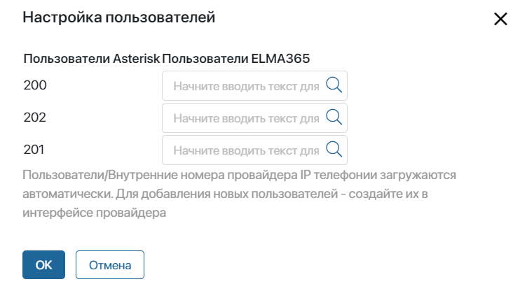
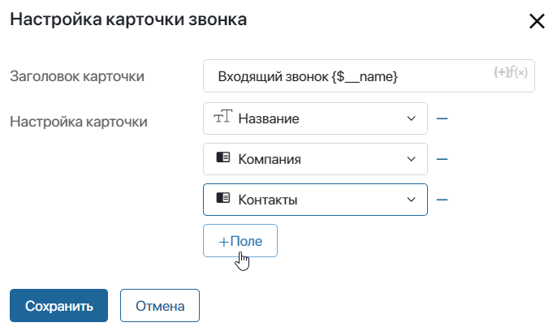

Модуль для подключения к провайдеру IP-телефонии Asterisk. Позволяет идентифицировать клиента по номеру, открывать во время звонка карточку связанного с ним приложения, например, сделки или лида, и прослушивать записи разговоров непосредственно в карточке.
Начало внимание
Настроить интеграцию с телефонией Asterisk можно только в ELMA365 On-Premises. Для работы модуля к решению Asterisk необходимо подключить интерфейс ARI, который поддерживается в версии Asterisk 12 и выше.
Конец внимание
Важно: вендор ELMA365 не несёт ответственности за настройку телефонии Asterisk и предоставляет инструкцию только по подключению модуля интеграции. По всем вопросам, связанным с настройкой телефонии, обращайтесь в техническую поддержку Asterisk либо воспользуйтесь документацией.
Подключить модуль
- Перейдите в раздел Администрирование > Модули.
- Нажмите +Модуль, а затем Скачать. В каталоге ELMA365 Store установите модуль Asterisk.
- После успешной установки нажмите Перейти в модуль и заполните поля для подключения.

Начало внимание
Значения полей для подключения модуля находятся в настройках сервера Asterisk в файле ari.conf.
Конец внимание
- Адрес Облачной АТС* — полный URL или API-адрес сервера, на котором находится Asterisk;
- Пользователь* — логин пользователя, указанный в файле ari.conf;
- Порт ARI* — порт, заданный в настройках интерфейса ARI. Обычно используется порт 8088;
- Пароль* — пароль пользователя, указанный в файле ari.conf;
- Приложение Облачной АТС* — произвольное название приложения, например, elma365. Приложение будет использоваться в качестве контекста, который объединит все настройки, каналы и события для работы в рамках одного подключения;
- Тип канала* — укажите протокол, по которому работает канал: SIP, PJSIP, DAHDI или IAX2. Тип канала определяется при настройке Asterisk;
- Контекст исходящих вызовов — название контекста, т. е. набора расширений, которые определяют правила совершения исходящих вызовов. Контекст настраивается на сервере Asterisk;
- Ссылка на запись звонка — прямая ссылка на файл с записью разговора, указанная в настройках сервера. В ссылке необходимо использовать параметры канала, создающегося при звонке. Уникальный путь до файла может выглядеть таким образом: http://record_{Id}_{Name}_{Creationtime}_{Creationtime.DayOfWeek}.wav.
Чтобы ознакомиться со списком параметров канала, нажмите на ссылку Переменные для подстановки.
- После заполнения полей нажмите кнопку Установить настройки сервиса, чтобы звонки отображались в интерфейсе ELMA365, и нажмите Сохранить.
- Нажмите кнопку Проверить соединение. Если связь между системами установлена, вы увидите уведомление об этом.
- Нажмите кнопку Сохранить.
Сопоставить пользователей
После того как соединение с провайдером будет установлено, необходимо сопоставить внутренних пользователей телефонии и пользователей ELMA365.
- В настройках модуля нажмите кнопку Настроить.
- Во всплывающем окне укажите пользователей ELMA365 для каждого внутреннего номера провайдера.

- Нажмите кнопку OK.
Обратите внимание, пользователи/внутренние номера провайдера IP телефонии загружаются автоматически. Если эти данные не отобразились, убедитесь, что пользователи на стороне провайдера созданы.
Настроить обработку входящего звонка
После подключения телефонии необходимо настроить обработку входящих звонков. Для этого в блоке Настройки обработки входящего звонка заполните следующие поля:
- Связать с приложением — укажите приложение, в котором будут создаваться и храниться элементы с информацией о клиенте и звонке. Обратите внимание, на форме выбранного приложения должно находиться поле типа Номер телефона;
- Контактный телефон — выберите поле типа Номер телефона из контекста указанного приложения, в которое будет записываться телефон клиента;
- Карточка звонка — нажмите кнопку Настроить, чтобы изменить внешний вид оповещения, всплывающего при звонке. В открывшемся окне вы можете отредактировать шаблон заголовка карточки, а также выбрать поля, которые будут отображаться в ней.

После настройки всех параметров интеграции нажмите кнопку Сохранить.
Диагностика
В случае возникновения ошибок в работе модуля Asterisk вы можете перейти на страницу его настройки и воспользоваться инструментами для диагностики:
- Посмотреть логи — при нажатии на кнопку открывается окно, в котором выводятся последние 200 записей о состоянии работы модуля;
- Проверить настройки сервиса — при нажатии на кнопку в системе проверяется, что настройки на стороне ELMA365 применены к сервису Asterisk. При обнаружении ошибок выводится уведомление.
Возможные ошибки и решения
В таблице ниже приведены ошибки, которые могут возникнуть при настройке и работе модуля.
Возможные ошибки |
Решения |
Ошибка Инициализация звонка не удалась при исходящем звонке через Asterisk. В devTools на вкладке NetWork запрос PUT http://some_domain/api/integrations/voip/system:ext_xxxx/call выполняется с ошибкой 502 (Bad Gateway). Входящий звонок не проходит. |
Заново загрузите модуль Asterisk из ELMA365 Store и нажмите кнопку Установить настройки сервиса. |
Не проходит исходящий звонок на внешний номер. |
|
При входящем звонке с внешнего номера нет всплывающих карточек. |
|
Ошибка Response status code does not indicate success: 422 (Unprocessable Entity) при нажатии кнопки Установить настройки сервиса в настройках модуля. При этом проверка соединения с Asterisk и сопоставление пользователей выполняется без ошибок |
Проверьте настройки подключения в модуле, в особенности правильность заполнения поля Тип канала. Тип канала определяется в конфигурации Asterisk или в freepbx в настройках. |
Ошибка Response status code does not indicate success: 401 (Unauthorized) при установке настроек в интеграции. |
Проверьте логин и пароль в настройках модуля. |
Ошибка Response status code does not indicate success: 400 (Bad Request) при установке настроек сервиса. В логах сообщения: Ari connected, Error connection Response status code does not indicate success: 400 (Bad Request). |
Проверьте настройки подключения в модуле. В особенности правильность заполнения полей Адрес Облачной АТС и Порт ARI. |
Не удаётся получить записи разговоров. |
В настройках модуля в поле Ссылка на запись звонка укажите прямую ссылку на файлы записей звонков. Допустим, на стороне Asterisk файлы с разговорами записываются в папку /var/log/asterisk/records/rec-${CHANNEL}.wav. http://example.com/records/rec-{Name}.wav. Также убедитесь, что:
|
Не отображаются оповещения при входящем звонке. При попытке отправить запрос по веб-хуку в логах переносимого сервиса ошибка Name or service not known. |
Обновите On-Premises до версии 2022.5.8. |